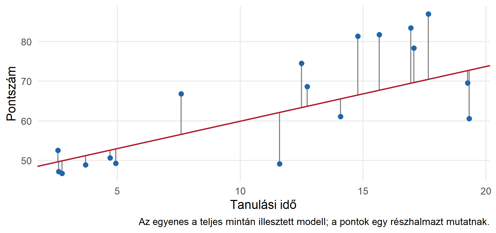
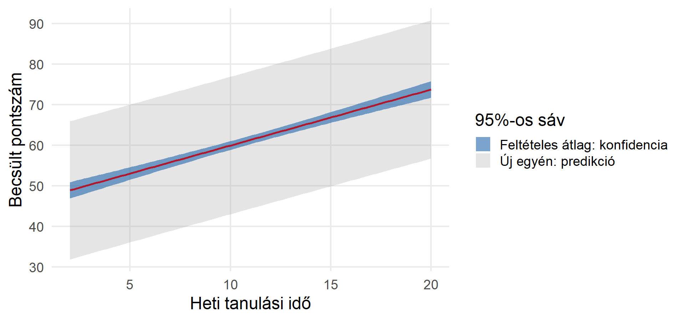
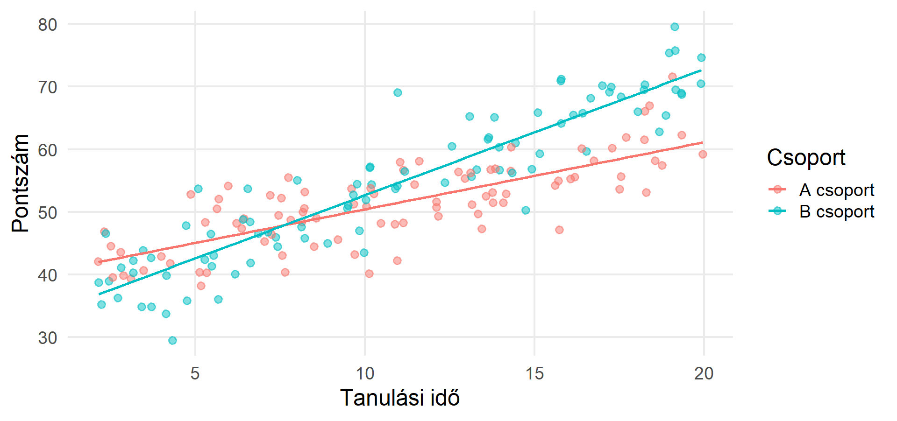
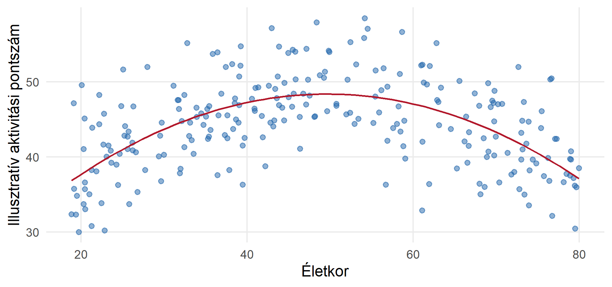
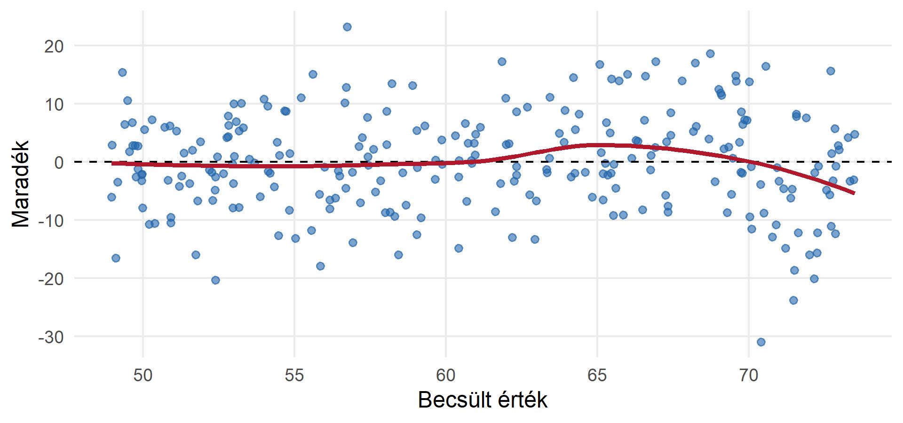
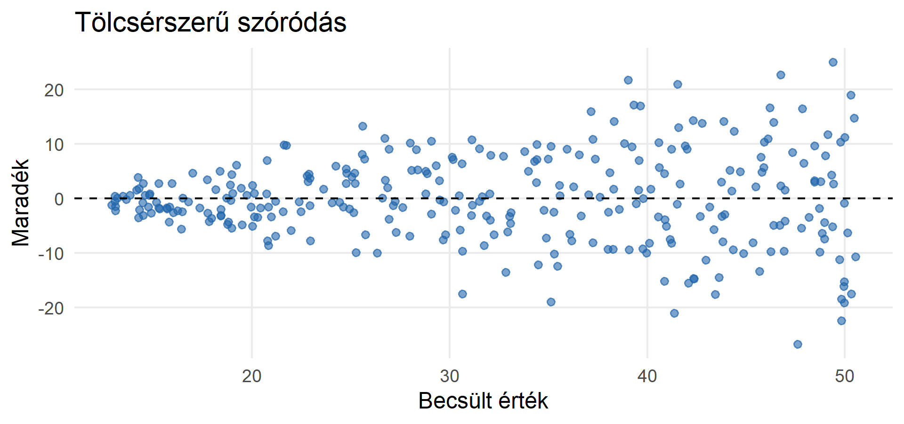
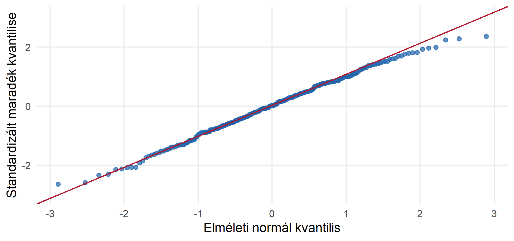
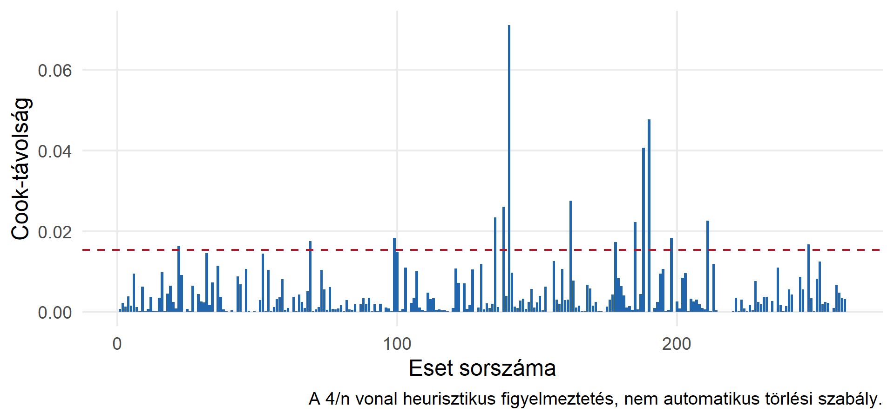
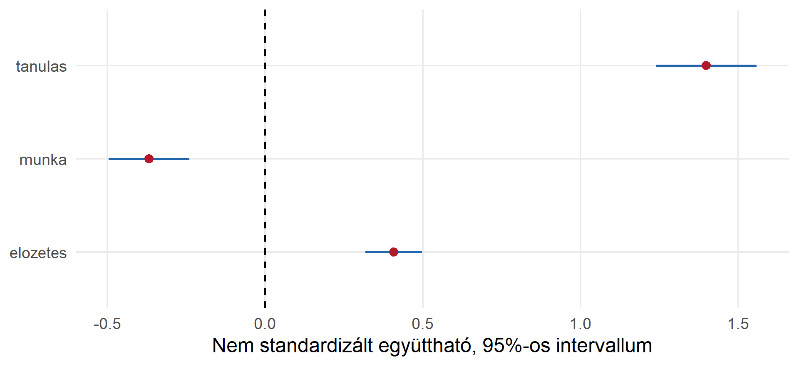

| Tag | B |
|---|---|
| (Intercept) | 46.163 |
| tanulas | 1.382 |
Regresszióelemzés
Részletes oktatási diasor · BA szociológia
1. A korrelációtól a regresszióig
Az elemzés három célja
| Cél | Kérdés | Mit kívánunk értékelni? |
|---|---|---|
| Leírás | Hogyan változik együtt két vagy több változó? | A mintázat alakja és nagysága |
| Előrejelzés | Milyen kimenetet várhatunk új eseteknél? | Mintán kívüli pontosság |
| Oksági következtetés | Mi történne, ha beavatkoznánk? | Azonosítás és kutatási terv |
A regresszió használható mindhárom célra, de ugyanaz a becsült együttható nem igazolja mindhárom értelmezést.
Tanulási célok
A témakör végére Ön képes lesz:
- értelmezni és kézzel kiszámítani egy egyszerű OLS-modellt;
- különbséget tenni hibatag, maradék, paraméter és becslés között;
- értelmezni együtthatókat, intervallumokat, \(t\)- és \(F\)-próbákat;
- kategorikus változókat, interakciókat és görbületet beépíteni;
- diagnosztikai ábrák alapján kritikus modellértékelést végezni;
- felelősen közölni a regressziós eredményeket.
Javasolt felosztás több alkalomra
| Alkalom | Témablokkok | Fő gyakorlat |
|---|---|---|
| 1 | Egyszerű OLS, becslés, korrelációs kapcsolat | Kézi számítás |
| 2 | Illeszkedés, következtetés, előrejelzés | Eredménytábla és intervallumok |
| 3 | Többváltozós OLS és kategorikus prediktorok | Kontroll és referencia |
| 4 | Interakciók, nemlinearitás, diagnosztika | Feltételes meredekségek |
| 5, vagy kiegészítő szeminárium | Modellépítés, robusztusság, alkalmazások | Önálló elemzési jelentés |
A haladó kitekintések és néhány technikai képlet külön is elhagyható.
Korreláció és regresszió
| Korreláció | Regresszió |
|---|---|
| Szimmetrikus: \(r_{XY}=r_{YX}\) | Meghatározott kimenetet modellez |
| Mértékegység nélküli | A meredekségnek mértékegysége van |
| Együttjárás erőssége | Feltételes átlag és előrejelzés |
| Nem ad becslési egyenletet | Becsült értékeket ad |
A parciális korreláció két maradék kapcsolata. A többszörös regresszió ugyanennek a kiigazításnak a logikáját is használja.
Visszatérő szociológiai példa
Kérdés: hogyan függ össze a tanulásra fordított idő és egy teszt pontszáma?
| Változó | Szerep | Skála |
|---|---|---|
| Tesztpontszám | Kimenet: \(Y\) | Mennyiségi pontszám |
| Heti tanulási idő | Prediktor: \(X\) | Óra |
| Előzetes tudás | Kontrolljelölt | Pontszám |
| Heti munkaidő | Kontrolljelölt | Óra |
| Képzési forma | Kategorikus prediktor | Nappali / levelező / esti |
Minden adat szimulált. Az ábrák nem valódi hallgatói vagy surveyeredmények.
Először az adatokat tekintse meg

Vizsgálja meg a kapcsolat irányát, alakját, a szóródást és a szokatlan eseteket.
2. Az egyszerű lineáris modell
A populációs modell
\[Y_i=\beta_0+\beta_1X_i+\varepsilon_i.\]
- \(\beta_0\): konstans (intercept).
- \(\beta_1\): populációs meredekség.
- \(\varepsilon_i\): az adott eset nem modellezett része.
Ha \(E(\varepsilon_i\mid X_i)=0\), akkor:
\[E(Y_i\mid X_i=x)=\beta_0+\beta_1x.\]
A modell a feltételes átlagot, nem minden egyes ember pontos kimenetét írja le.
Paraméter, becslés, becsült érték
\[\widehat Y_i=b_0+b_1X_i,\qquad e_i=Y_i-\widehat Y_i.\]
| Jelölés | Jelentés |
|---|---|
| \(\beta_0,\beta_1\) | Ismeretlen populációs paraméter |
| \(b_0,b_1\) | Mintából kapott becslés |
| \(\widehat Y_i\) | Becsült kimenet |
| \(\varepsilon_i\) | Nem megfigyelhető populációs hibatag |
| \(e_i\) | Megfigyelhető mintabeli maradék |
A maradék nem szükségszerűen adatfelvételi vagy mérési hiba.
Mit jelent a meredekség?
Illusztratív egyenlet:
\[\widehat{\text{pontszám}}=40+2\cdot\text{tanulási óra}.\]
Egy további heti tanulási órához átlagosan 2 ponttal magasabb becsült pontszám társul.
- Ez nem azt jelenti, hogy minden hallgató pontosan 2 pontot nyer.
- Megfigyelési adatból nem következik automatikusan okozati hatás.
- A meredekség mértékegysége: pont / óra.
A 40-es konstans a nulla tanulási óránál becsült átlag; ha nulla nem szerepel az adatok tartományában, ez extrapoláció.
Maradékok: a függőleges eltérések

Miért legkisebb négyzetek?
Az OLS azokat az együtthatókat választja, amelyek minimalizálják:
\[SSE=\sum_{i=1}^n e_i^2=\sum_{i=1}^n(Y_i-b_0-b_1X_i)^2.\]
- A pozitív és negatív maradékok nem oltják ki egymást.
- A nagy eltérések négyzetesen nagy büntetést kapnak.
- Emiatt az OLS érzékeny lehet befolyásos esetekre.
Az OLS függőleges eltéréseket minimalizál, nem a pontok egyenestől mért legrövidebb geometriai távolságát.
Becslési képletek
\[b_1=\frac{\sum(X_i-\bar X)(Y_i-\bar Y)}{\sum(X_i-\bar X)^2},\qquad b_0=\bar Y-b_1\bar X.\]
A konstanssal illesztett OLS-egyenes átmegy a \((\bar X,\bar Y)\) ponton.
\[b_1=r\frac{s_Y}{s_X}.\]
Ez összeköti a korrelációt a regresszióval: a meredekség a lineáris együttjárást az eredeti változók mértékegységébe helyezi.
Kézi példa: adatok
| \(X\) | \(Y\) | \(X-\bar X\) | \(Y-\bar Y\) | Keresztszorzat | \((X-\bar X)^2\) |
|---|---|---|---|---|---|
| 1 | 2 | -1,5 | -1,5 | 2,25 | 2,25 |
| 2 | 3 | -0,5 | -0,5 | 0,25 | 0,25 |
| 3 | 3 | 0,5 | -0,5 | -0,25 | 0,25 |
| 4 | 6 | 1,5 | 2,5 | 3,75 | 2,25 |
| Összeg | 6 | 5 |
\(\bar X=2{,}5\), \(\bar Y=3{,}5\).
\[b_1=6/5=1{,}2,\qquad b_0=3{,}5-1{,}2\cdot2{,}5=0{,}5.\]
Tehát \(\widehat Y=0{,}5+1{,}2X\).
Kézi példa: maradékok és előrejelzés
| \(X\) | \(Y\) | \(\widehat Y\) | \(e\) | \(e^2\) |
|---|---|---|---|---|
| 1 | 2 | 1,7 | 0,3 | 0,09 |
| 2 | 3 | 2,9 | 0,1 | 0,01 |
| 3 | 3 | 4,1 | -1,1 | 1,21 |
| 4 | 6 | 5,3 | 0,7 | 0,49 |
\(SSE=1{,}80\). Az \(X=2{,}5\) értéknél a becslés \(3{,}5\).
Feladat: számítsa ki a becsült értéket \(X=3{,}5\) esetén! Miért nem tudjuk a tényleges egyedi \(Y\)-t pontosan meghatározni?
\(\widehat Y=4{,}7\); az egyéni kimenetek az átlag körül szóródnak.
Illesztés R-ben
A pont ~ tanulas formula a pontszámot a tanulási idővel modellezi; a konstans alapértelmezetten szerepel.
3. Illeszkedés és statisztikai következtetés
A változékonyság felbontása
Konstanssal illesztett OLS esetén:
\[SST=\sum(Y_i-\bar Y)^2=SSR+SSE,\] \[SSR=\sum(\widehat Y_i-\bar Y)^2,\qquad SSE=\sum(Y_i-\widehat Y_i)^2.\]
- \(SST\): teljes mintabeli változékonyság.
- \(SSR\): a modell által leírt változékonyság.
- \(SSE\): a maradék változékonysága.
A jelölések forrásonként eltérhetnek; mindig nézze meg, mire utalnak!
Az \(R^2\) értelmezése
\[R^2=1-\frac{SSE}{SST}.\]
Egyszerű OLS-ben, konstans mellett: \(R^2=r^2\).
- Ha \(R^2=0{,}25\), a modell a mintabeli kimeneti változékonyság 25%-át írja le.
- Nem azt jelenti, hogy az esetek 25%-a helyesen előrejelzett.
- Nem jelenti, hogy \(Y\) 25%-át \(X\) okozza.
- A magas \(R^2\) nem bizonyít helyes specifikációt vagy okságot.
A kézi példában \(SST=9\), így \(R^2=1-1{,}8/9=0{,}80\).
Reziduális szórás és korrigált \(R^2\)
Ha \(k\) prediktoregyüttható van a konstans mellett:
\[s=\sqrt{\frac{SSE}{n-k-1}},\] \[R^2_{\mathrm{adj}}=1-\frac{SSE/(n-k-1)}{SST/(n-1)}.\]
- \(s\) a maradékok tipikus nagyságát jelzi a kimenet egységében.
- Új prediktorok mellett a mintabeli \(R^2\) nem csökken.
- A korrigált \(R^2\) bünteti a fölösleges modellbővítést; csökkenhet, illetve negatív is lehet.
- Nem helyettesíti a diagnosztikát vagy mintán kívüli értékelést.
A meredekség bizonytalansága
Klasszikus egyszerű OLS esetén:
\[SE(b_1)=\frac{s}{\sqrt{\sum(X_i-\bar X)^2}}.\]
A bizonytalanság rendszerint kisebb, ha több információ áll rendelkezésre: nagyobb minta és nagyobb \(X\)-szóródás; nagyobb hibaszórás viszont növeli.
\[b_1\pm t_{1-\alpha/2,n-2}\,SE(b_1).\]
A 95%-os konfidenciaintervallum módszere ismételt mintavételnél 95%-os lefedettséget céloz; nem az egyéni pontszámok 95%-át tartalmazza.
A \(t\)-próba logikája
\[H_0:\beta_1=0,\qquad H_1:\beta_1\ne0,\] \[t=\frac{b_1-0}{SE(b_1)},\qquad df=n-2.\]
- A kétoldali \(p\)-érték a nullmodell alatt számított szélsőségességet jelzi.
- A szignifikancia nem azonos a nagy vagy fontos kapcsolattal.
- A nemszignifikáns eredmény nem bizonyítja, hogy a kapcsolat nulla.
- A Pearson-korreláció nullpróbája és az egyszerű regressziós meredekség próbája ugyanazon eseteken, azonos klasszikus feltételek mellett ekvivalens.
Az első modell eredménytáblája
| Tag | B | SE | t | p | Also | Felso |
|---|---|---|---|---|---|---|
| (Intercept) | 46.163 | 1.194 | 38.663 | 0 | 43.812 | 48.514 |
| tanulas | 1.382 | 0.098 | 14.091 | 0 | 1.189 | 1.575 |
Feladat: nevezze meg a meredekséget, standard hibáját és intervallumát. Írjon egy mondatot a becsült kapcsolat nagyságáról és egyet a bizonytalanságról.
Az összmodell \(F\)-próbája
Többszörös OLS-ben:
\[H_0:\beta_1=\dots=\beta_k=0,\] \[F=\frac{SSR/k}{SSE/(n-k-1)},\qquad df_1=k,\;df_2=n-k-1.\]
A modell legalább egy meredeksége nem nulla az alternatíva szerint.
Egyszerű regresszióban \(F=t^2\). A szignifikáns összmodell nem jelenti, hogy minden prediktor egyenként szignifikáns.
4. Becslés és előrejelzés
Két eltérő intervallum
| Intervallum | Mire vonatkozik? |
|---|---|
| A feltételes átlag konfidenciaintervalluma | Az adott \(X\)-nél lévő populációs átlagra |
| Egy új eset predikciós intervalluma | Egy új egyéni kimenetre |
Az új egyén esetében a modellbecslés bizonytalanságán túl egyéni szóródás is van, ezért a predikciós intervallum szélesebb.
A klasszikus egyéni predikciós intervallum különösen támaszkodik a hibatagok eloszlására.
A két sáv összehasonlítása

Intervallumok R-ben
fit lwr upr
1 59.97973 58.91656 61.04291 fit lwr upr
1 59.97973 43.03243 76.92704Ne keverje össze az átlag és az egyéni kimenet bizonytalanságát.
Extrapoláció és átvihetőség
- Interpoláció: becslés az adatokkal lefedett tartományban.
- Extrapoláció: becslés azon kívül; a modell alakjára vonatkozó többletfeltevés szükséges.
- Több prediktornál külön-külön szokványos értékek kombinációja is lehet ritka.
- Más egyetemre, korszakra vagy társadalmi csoportra történő alkalmazás nem automatikusan megalapozott.
Kérdés: indokolható-e az 50 heti tanulási órára történő becslés egy 2–20 órát tartalmazó mintából?
5. Többszörös lineáris regresszió
Több prediktor, feltételes kapcsolat
\[Y_i=\beta_0+\beta_1X_{1i}+\dots+\beta_kX_{ki}+\varepsilon_i.\]
\(\beta_j\) az \(X_j\)-hez tartozó feltételes meredekség, a modell többi prediktorának rögzített értéke mellett, ha nincs olyan interakció vagy nemlineáris tag, amely ezt módosítja.
A „többi változó változatlansága mellett” modellbeli összehasonlítás; nem feltétlenül szó szerinti beavatkozás.
Nyers és kontrollált modell
| Modell | Tanulasi_meredekseg | R2 |
|---|---|---|
| Csak tanulási idő | 1.382 | 0.435 |
| Előzetes tudás és munkaidő is | 1.398 | 0.618 |
Az együttható változhat a kontroll után. A változás önmagában nem bizonyít zavaró tényezőt vagy közvetítő mechanizmust.
A többszörös modell táblája
| Tag | B | SE | t | p | Also | Felso |
|---|---|---|---|---|---|---|
| (Intercept) | 26.171 | 3.030 | 8.637 | 0 | 20.204 | 32.139 |
| tanulas | 1.398 | 0.081 | 17.270 | 0 | 1.239 | 1.558 |
| elozetes | 0.407 | 0.045 | 8.974 | 0 | 0.318 | 0.497 |
| munka | -0.369 | 0.065 | -5.678 | 0 | -0.497 | -0.241 |
Feladat: értelmezze a munkaidő együtthatóját! Ne írja azt, hogy a modellből önmagában bizonyított oksági hatás következik.
Kapcsolat a parciális korrelációval
Az \(X_1\) együtthatója úgy is megkapható, hogy:
- \(Y\)-ból eltávolítjuk a többi prediktorral modellezett lineáris részt.
- \(X_1\)-ből is eltávolítjuk ugyanezen prediktorok lineáris részét.
- Az első maradékot a másodikra regresszáljuk.
A maradékok korrelációja parciális korreláció; a köztük lévő regressziós meredekség az eredeti modell megfelelő együtthatója.
A két mennyiség általában nem azonos!
Standardizált együtthatók
\[\beta_j^{\mathrm{std}}=b_j\frac{s_{X_j}}{s_Y}.\]
Egy szórásnyi \(X_j\)-eltéréshez társuló becsült \(Y\)-eltérés, \(Y\) szórásegységében, a többi prediktor figyelembevétele mellett.
- Egyszerű regresszióban a standardizált meredekség \(r\).
- Többszörös modellben nem azonos a parciális korrelációval; abszolút értéke akár 1-nél nagyobb is lehet.
- Nem univerzális „fontossági rangsor”: mintabeli szóródás, mérés, kollinearitás is alakítja.
- Dummy változóknál gyakran az eredeti csoportkülönbség informatívabb.
Kontrollváltozó: elméleti döntés
| Lehetséges szerep | Következmény |
|---|---|
| Közös előzmény | Indokolt lehet kontrollálni a megfelelő oksági kérdésnél |
| Mediátor | Kontrollja más kérdést célozhat, mint a teljes hatás |
| Kollider: közös következmény | Kontrollja új, nem oksági kapcsolatot nyithat |
| Eredmény utáni változó | Kontrollja különös óvatosságot igényel |
A kontrollváltozókat ne pusztán a szignifikancia alapján válassza. A kutatási terv, időrend és tartalmi elmélet döntő.
6. Kategorikus prediktorok és ANOVA
Bináris prediktor: két csoport
\[\widehat Y=b_0+b_1D,\qquad D\in\{0,1\}.\]
- \(D=0\): becsült átlag \(b_0\).
- \(D=1\): becsült átlag \(b_0+b_1\).
- \(b_1\): a két csoport átlagának különbsége.
Kiegészítő prediktorokkal ez kiigazított modellbeli különbség.
A kódolást mindig közölje: a 0/1 címkék megfordításával az előjel megváltozik.
Több kategória: \(g-1\) dummy
Három képzési forma, referencia: nappali.
| Kategória | \(D_L\) | \(D_E\) |
|---|---|---|
| Nappali | 0 | 0 |
| Levelező | 1 | 0 |
| Esti | 0 | 1 |
\[\widehat Y=b_0+b_LD_L+b_ED_E.\]
Konstans mellett mindhárom dummy bevonása tökéletes lineáris függést okozna: dummycsapda.
Referencia és értelmezés R-ben
| Tag | B | SE | t | p | Also | Felso |
|---|---|---|---|---|---|---|
| (Intercept) | 25.775 | 2.939 | 8.771 | 0.000 | 19.987 | 31.562 |
| tanulas | 1.410 | 0.078 | 18.059 | 0.000 | 1.256 | 1.564 |
| elozetes | 0.409 | 0.044 | 9.346 | 0.000 | 0.323 | 0.496 |
| munka | -0.318 | 0.064 | -4.983 | 0.000 | -0.444 | -0.192 |
| kepzesLevelező | -3.535 | 1.080 | -3.272 | 0.001 | -5.663 | -1.408 |
| kepzesEsti | 1.485 | 0.999 | 1.487 | 0.138 | -0.482 | 3.452 |
A képzési forma együtthatói a nappali kategóriához képest értelmezendők. A referencia cseréje átalakítja az együtthatókat, de nem változtatja meg az illesztett értékeket.
Egy kategorikus változó közös próbája
Nem azonos kérdés:
- egy adott dummy együtthatója nulla-e;
- a teljes kategorikus változó valamennyi kontrasztja nulla-e.
Analysis of Variance Table
Model 1: pont ~ tanulas + elozetes + munka
Model 2: pont ~ tanulas + elozetes + munka + kepzes
Res.Df RSS Df Sum of Sq F Pr(>F)
1 256 12861
2 254 11851 2 1010.1 10.825 3.081e-05 ***
---
Signif. codes: 0 '***' 0.001 '**' 0.01 '*' 0.05 '.' 0.1 ' ' 1A fenti beágyazott összehasonlítás a két képzésidummy együttes többletét vizsgálja a többi prediktor felett, azonos eseteken és klasszikus OLS-feltételek mellett.
ANOVA mint regresszió
Egyetlen kategorikus prediktor dummykkal felírt OLS-modellje ugyanazokat a csoportátlagokat becsüli, mint az egyutas ANOVA.
- Az összmodell \(F\)-próbája: minden populációs csoportátlag egyenlő-e?
- A dummy \(t\)-próbája: adott referencia-kontraszt nulla-e?
- A sok páronkénti próba többszörös tesztelési problémát vet fel.
A regresszió és az ANOVA nem elszigetelt eljáráscsalád: mindkettő lineáris modellként értelmezhető.
Sorrendi prediktor: szám vagy faktor?
Egy 1–5 kódolású attitűdtétel számszerű bevonása feltételezi, hogy az egyes lépések azonos kimeneti átlagváltozást jelentenek.
- Számszerű modell: egy meredekség, egyszerűbb, erősebb feltevés.
- Faktormodell: több kontraszt; nem kényszerít egyenletes lépéseket.
- A kódok sorrendje önmagában nem bizonyít egyenlő távolságot.
Döntéséhez használja a tartalmi jelentést, csoportos ábrákat és indokolt modell-összehasonlítást.
7. Interakció és nemlinearitás
Interakció: a kapcsolat feltételes
\[\widehat Y=b_0+b_1X+b_2D+b_3XD.\]
- \(D=0\): \(\widehat Y=b_0+b_1X\).
- \(D=1\): \(\widehat Y=(b_0+b_2)+(b_1+b_3)X\).
- \(b_3\): a két meredekség különbsége.
- \(b_2\): a csoportkülönbség \(X=0\)-nál, nem mindenütt.
Főhatást interakció mellett mindig a kapcsolódó változó adott értékén értelmezzen.
Két eltérő meredekség

Kérdés: ugyanakkora-e a csoportkülönbség minden tanulási időnél?
Interakció R-ben
| Estimate | Std. Error | t value | Pr(>|t|) | |
|---|---|---|---|---|
| (Intercept) | 39.690 | 1.163 | 34.133 | 0 |
| x | 1.072 | 0.098 | 10.891 | 0 |
| dB csoport | -7.180 | 1.575 | -4.558 | 0 |
| x:dB csoport | 0.942 | 0.132 | 7.164 | 0 |
Az x * d kifejezés az x + d + x:d rövidítése. Általában őrizze meg az alacsonyabb rendű tagokat is.
Két folytonos változó interakciója
\[\widehat Y=b_0+b_1X+b_2Z+b_3XZ.\]
Az \(X\) feltételes meredeksége:
\[\frac{\partial\widehat Y}{\partial X}=b_1+b_3Z.\]
A \(b_1\) meredekség \(Z=0\) mellett értendő. Mutassa meg a kapcsolatot tartalmilag értelmes \(Z\)-értékeknél; ne csak az interakció \(p\)-értékét közölje.
Centrálás: értelmezhető nulla
\[X_c=X-\bar X.\]
- Az új nullpont az átlag.
- Az additív modell konstansa ezáltal átlagos prediktorértékhez köthető.
- Az illesztett értékek nem változnak az algebrailag ekvivalens átírástól.
- Interakcióknál a főhatások értelmezési pontja változik.
- A centrálás nem univerzális gyógymód a kollinearitásra.
Lineáris a paraméterekben
\[\widehat Y=b_0+b_1X+b_2X^2.\]
Ez lineáris modell a paraméterekben, bár az \(X\)–\(Y\) kapcsolat görbe.
\[\frac{\partial\widehat Y}{\partial X}=b_1+2b_2X.\]
A kvadratikus tag mellett \(b_1\) önmagában nem az egész tartomány meredeksége. A fordulópont \(-b_1/(2b_2)\), ha \(b_2\ne0\); csak a megfigyelt tartományban értelmezze óvatosan.
Kvadratikus kapcsolat illesztése

Logaritmikus transzformációk
| Modell | A meredekség értelmezése |
|---|---|
| \(Y=b_0+b_1\ln X\) | \(X\) kb. 1%-os növekedése kb. \(b_1/100\) egységnyi \(Y\)-változással jár |
| \(\ln Y=b_0+b_1X\) | Egy \(X\)-egységhez kb. \(100b_1\)%-os változás társul a modell szerinti geometriai szinten |
| \(\ln Y=b_0+b_1\ln X\) | \(b_1\) rugalmasság: 1%-os \(X\)-eltéréshez kb. \(b_1\)%-os eltérés társul |
A log-lineáris eset pontos arányos változása \(100(e^{b_1}-1)\)%. Log csak pozitív értékekre vehető; az eredeti skálára való átlag-előrejelzésnél az egyszerű exponenciálás torzíthat.
8. Feltevések és diagnosztika
Melyik feltevés mire kell?
| Feltevés / követelmény | Jelentőség |
|---|---|
| Helyes feltételes átlag, \(E(\varepsilon\mid X)=0\) | A célzott paraméterek megfelelő becslése |
| Nincs tökéletes kollinearitás | Együtthatók azonosíthatósága |
| Független hibák / megfelelő mintaterv | Bizonytalanság helyes kezelése |
| Állandó hibavariancia | Klasszikus standard hibák és hatékonyság |
| Normális feltételes hibatagok | Kis mintás egzakt klasszikus próbák, normálalapú predikció |
Sem a prediktoroknak, sem a nyers kimenetnek nem kell normális eloszlásúnak lennie.
Mit ellenőrizhetünk, és mit nem?
- A maradékdiagramok segítenek felismerni görbületet, heteroszkedaszticitást és szokatlan eseteket.
- Az elhagyott változók, fordított okság és mérési hibák nem zárhatók ki egy „szép” maradékábrával.
- A klaszterezettség gyakran a kutatási tervből derül ki, nem a pontdiagramról.
- Az előfeltevés-próba nemszignifikáns eredménye nem bizonyítja a feltevés teljesülését.
Diagnosztika + elmélet + mintaterv + érzékenységvizsgálat szükséges.
Maradékok a becsült értékek függvényében

A görbe mintázat a feltételes átlag specifikációs problémájára utalhat. A nulla körüli maradékátlag önmagában nem elegendő.
Heteroszkedaszticitás: változó szóródás

Robusztus standard hibák
Heteroszkedaszticitás esetén indokolt lehet heteroszkedaszticitás-robosztus (például HC3) standard hibát használni.
- Az OLS-együtthatók nem változnak; a standard hibák, próbák és intervallumok igen.
- Nem javítja ki a hibás átlagfüggvényt, az endogenitást vagy a mérési hibát.
- A robusztus standard hiba nem ugyanaz, mint a kiugró értékeket kezelő robusztus regresszió.
- A klasszikus
predict(..., interval="prediction")sávot ez önmagában nem teszi heteroszkedaszticitás-robosztussá.
Normál Q–Q-ábra

Nagy eltérések a széleken nehéz farkakra vagy kirívó esetekre utalhatnak. Nem a nyers \(Y\) normalitását vizsgáljuk.
Függetlenség és klaszterezettség
Iskolák, háztartások, települések és országok szerint csoportosított esetek hibái összefügghetnek.
- Az egyszerű OLS standard hibák túl kicsik lehetnek.
- Megfelelő klaszterrobusztus következtetés, surveyeljárás vagy többszintű modell lehet szükséges.
- Idősornál az autokorreláció külön modell- és következtetési kérdés.
A „nagy minta” nem teszi automatikusan függetlenné a megfigyeléseket.
Kiugró, nagy leverage, befolyásos
| Fogalom | Jelentés |
|---|---|
| Kiugró kimenet | Nagy maradék a prediktorokhoz képest |
| Nagy leverage | Szokatlan prediktorérték vagy kombináció |
| Befolyásos eset | Jelentősen módosítja az illesztést, ha kihagyjuk |
Egy eset lehet nagy leverage-ű kis maradékkal, vagy kiugró kis leverage mellett. A Cook-távolság mindkét szempontot figyelembe veszi.
Befolyásvizsgálat: Cook-távolság

Mit tegyen szokatlan esettel?
- Ellenőrizze az adatfelvételt, kódolást és mértékegységet.
- Vizsgálja meg, ugyanahhoz a célpopulációhoz tartozik-e.
- Hasonlítsa össze az indokolt elemzési változatokat.
- Dokumentálja a kizárás vagy megtartás okát.
Ne töröljön eseteket kizárólag azért, hogy jobb \(p\)-értéket vagy \(R^2\)-t kapjon.
Multikollinearitás
Erősen együttjáró prediktoroknál nehezebb elkülöníteni az egyedi meredekségeket.
\[VIF_j=\frac{1}{1-R_j^2},\]
ahol \(R_j^2\) az \(X_j\) többi prediktorra történő regressziójából származik.
- Standard hibák nőhetnek; együtthatók instabillá válhatnak.
- Az előrejelzés ettől még lehet jó.
- Nincs minden helyzetben kötelező VIF-határ.
- Prediktort ne hagyjon el kizárólag VIF alapján, ha a kutatási kérdéshez szükséges.
Diagnosztikai munkafolyamat
- Vizsgálja meg az adatok tartományát, hiányait és eloszlását.
- Ellenőrizze a mintatervet és a kutatási kérdést.
- Illessze az elméletileg indokolt modellt.
- Tekintse meg a maradék-, Q–Q- és befolyásábrákat.
- Vizsgálja meg a nemlinearitást, csoportkülönbségeket és kollinearitást.
- Szükség szerint javítsa a specifikációt vagy a következtetési módszert.
- Közöljön érzékenységvizsgálatot és korlátokat.
9. Modellépítés és adatminőség
Beágyazott modellek összehasonlítása
A szűkebb modell a bővebb modell egyes együtthatóinak nullára állításával kapható meg.
\[F=\frac{(SSE_R-SSE_F)/q}{SSE_F/(n-k_F-1)}.\]
\(R\): szűkebb, \(F\): teljes modell; \(q\) az új paraméterek száma.
- Azonos eseteken és azonos kimeneti skálán hasonlítsa össze a modelleket.
- Klasszikus részleges \(F\)-próba a szokásos varianciafeltételekre épül.
- Robusztus következtetésnél megfelelő robusztus közös próbát használjon.
- A nem beágyazott modellek nem ezzel a próbával hasonlíthatók össze.
Túlillesztés és keresztvalidáció
A mintabeli illeszkedés javítása nem garantálja új esetek jó előrejelzését.
- Tanulóminta: modellillesztés.
- Tesztminta: egyszeri, elkülönített értékelés.
- Keresztvalidáció: több tanuló–ellenőrző felosztás.
- Az előfeldolgozást is a tanulóadatból kell megtanulni: kerülje az adatszivárgást.
Predikciós cél esetén értékeljen például RMSE-t és MAE-t; oksági cél esetén a jó predikció önmagában nem azonosít hatást.
Predikciós ellenőrzés R-ben
| RMSE | MAE |
|---|---|
| 6.533 | 5.143 |
Ez szemléltető egyszeri felosztás; stabil értékeléshez több adat vagy keresztvalidáció szükséges.
Hiányzó adatok
- A teljeseset-elemzés csökkenti a mintát, és torzíthat, ha a hiányzás szerkezete ezt okozza.
- A modellek között eltérő esetszám félrevezető összehasonlítást eredményezhet.
- A hiányzó érték nem azonos a nullával.
- Az egyszerű átlaggal pótlás alábecsülheti a bizonytalanságot és torzíthatja a kapcsolatokat.
- Többszörös imputáció megfelelő modell és hiányzási feltevések mellett lehetséges kiterjesztés.
A közlésben szerepeljen az elemzett \(n\) és a hiánykezelés.
Mérési hiba, elhagyott változó, endogenitás
- A klasszikus prediktormérési hiba egyszerű helyzetben gyengítheti a meredekséget; többváltozós esetben bonyolultabb torzítások lehetnek.
- Ha a releváns elhagyott változó együtt jár a prediktorral és a kimenettel, a meredekség torzulhat a célzott értelmezéshez képest.
- Fordított okság is sértheti az exogenitást.
- Ezekre nem jelent megoldást a nagyobb minta, a magas \(R^2\) vagy a robusztus standard hiba.
Az elemzés minősége az adatok és a kutatási terv minőségétől is függ.
Surveyadatok és súlyozás
- A célpopulációhoz igazított mintasúlyok megváltoztathatják a becsült kapcsolatot.
- A komplex mintaterv következtetéséhez rétegzés és klaszterezettség figyelembevétele szükséges.
- Az
lm(..., weights=...)önmagában nem teljes komplex-survey elemzés. - A survey-mintasúly nem ugyanaz a fogalom, mint a hibavariancia alapján választott WLS-súly.
ESS, EVS vagy más survey esetén előbb a dokumentációt és a mintatervet tekintse át.
Mikor nem OLS a fő választás?
| Kimenet / adathelyzet | Lehetséges továbblépés |
|---|---|
| Bináris esemény | Logisztikus regresszió |
| Esetszám / darabszám | Poisson vagy negatív binomiális modell |
| Sorrendi kimenet | Ordinális modell |
| Iskolákba / országokba ágyazott esetek | Többszintű modell / tervalapú következtetés |
| Eseményig eltelt idő | Túlélési modell |
Ezek kitekintések. Az OLS nem válik megfelelővé pusztán attól, hogy a program együtthatókat számol.
10. Eredményközlés és számonkérés
Mit tartalmazzon a jelentés?
- Kutatási kérdés, célpopuláció, adatforrás és mintaterv.
- Változók definíciója, skála, kódolás és referenciák.
- Elemzett esetszám, hiányzóadat-kezelés.
- Modellformula és a specifikáció indoklása.
- Együtthatók, standard hibák / konfidenciaintervallumok; a következtetési módszer megnevezése.
- Illeszkedés, diagnosztika és szükséges érzékenységvizsgálat.
- Tartalmi értelmezés és korlátok, oksági túlállítás nélkül.
Együtthatóábra

A különböző mértékegységű együtthatók nagyságát ne kezelje automatikus fontossági rangsorként.
Mintaszöveg dinamikus eredményekkel
A szimulált mintán (260 eset) az előzetes tudás és a munkaidő figyelembevétele mellett egy további heti tanulási órához 1.40 ponttal magasabb becsült tesztpontszám társult (95%-os CI: 1.24–1.56). A modell R² értéke 0.62. Ez az eredmény feltételes kapcsolatot ír le, és önmagában nem igazolja a tanulási idő oksági hatását.
A közlés mindig nevezze meg a kontrollokat és a mértékegységeket.
Gyakori hibák
| Hibás állítás | Miért hibás? |
|---|---|
| „Szignifikáns, ezért fontos.” | Nagyság és bizonytalanság külön kérdés |
| „Kontrolláltunk, tehát oksági.” | Azonosítás nem automatikus |
| „A magas \(R^2\) jó modellt bizonyít.” | Diagnosztika és általánosíthatóság is kell |
| „A prediktornak normálisnak kell lennie.” | Nem ez a klasszikus normalitási feltevés |
| „A robusztus SE mindent javít.” | Nem javítja a hibás modellt vagy endogenitást |
| „A konstans mindig tartalmilag értelmes.” | A nulla lehet az adatokon kívül |
Írásbeli feladat: egyszerű modell
Adott: \(\bar X=10\), \(\bar Y=60\), \(s_X=4\), \(s_Y=12\), \(r=0{,}50\).
- Számítsa ki a meredekséget és a konstanst!
- Becsülje \(Y\)-t \(X=14\) esetén!
- Számítsa ki az \(R^2\)-et!
- Fogalmazzon meg egy helyes és egy indokolatlan oksági következtetést!
\(b_1=0{,}50\cdot12/4=1{,}5\); \(b_0=45\); \(\widehat Y(14)=66\); \(R^2=0{,}25\).
Írásbeli feladat: interakció
\[\widehat Y=40+2X+5D-0{,}5XD.\]
- Mi a meredekség \(D=0\) és \(D=1\) esetén?
- Mi a csoportkülönbség \(X=10\) mellett?
- Miért nem állandó 5 egység a csoportkülönbség?
Meredekségek: 2 és 1,5. Csoportkülönbség: \(5-0{,}5X\); \(X=10\)-nél nulla. Az 5 a különbség \(X=0\)-nál.
Komplex alkalmazási feladat
Ön egy surveyadatbázisban az intézményi bizalmat kívánja modellezni.
- Válasszon tartalmilag indokolt prediktorokat és egyértelmű elemzési célt.
- Ellenőrizze a kimenet skáláját és a mintatervet.
- Mutasson be nyers és kiigazított modellt azonos eseteken.
- Vizsgáljon meg egy kategorikus prediktort és egy előre indokolt interakciót.
- Készítsen diagnosztikai ábrákat és eredménytáblát.
- Írjon rövid jelentést, legalább két korláttal.
A több prediktor nem önmagában jelent jobb elemzést.
Kilépőkártya
- Mi a különbség \(\varepsilon_i\) és \(e_i\) között?
- Miért szélesebb a predikciós, mint az átlag konfidenciaintervalluma?
- Mit jelent a dummy együtthatója egy additív modellben?
- Milyen feltétel mellett változik az \(X\) meredeksége \(Z\) értékével?
- Mit nem old meg a heteroszkedaszticitás-robosztus standard hiba?
Függelék és források
Egyszerű OLS: klasszikus intervallumképletek
Legyen \(S_{XX}=\sum(X_i-\bar X)^2\). Adott \(x_0\) mellett:
\[SE(\widehat\mu_0)=s\sqrt{\frac1n+\frac{(x_0-\bar X)^2}{S_{XX}}},\] \[SE_{\mathrm{pred}}=s\sqrt{1+\frac1n+\frac{(x_0-\bar X)^2}{S_{XX}}}.\]
Az intervallum \(\widehat Y_0\pm t_{1-\alpha/2,n-2}\cdot SE\).
A plusz 1 az új egyén hibavarianciáját tükrözi. A képletek a klasszikus homoszkedasztikus modellhez tartoznak.
Haladó kitekintés: mátrixos OLS
\[\mathbf Y=\mathbf X\boldsymbol\beta+\boldsymbol\varepsilon,\] \[\mathbf b=(\mathbf X^T\mathbf X)^{-1}\mathbf X^T\mathbf Y.\]
A képlet teljes oszloprangot feltételez. A konstans a tervmátrix egy 1-esekből álló oszlopa.
Ez nem kötelező BA-szintű kézi számítás: azt szemlélteti, hogy az egyszerű és többszörös OLS ugyanazon becslési elv változatai.
Haladó kitekintés: alternatív becslések
- WLS: megfelelően választott súlyokkal kezeli a különböző hibavarianciákat.
- Robusztus regresszió: csökkenti egyes szélsőséges esetek befolyását.
- Ridge / lasso: regularizáció, főként predikciós célra; együtthatók zsugorítása.
- Kvantilis regresszió: nem csak a feltételes átlagot, hanem például a mediánt célozza.
Ezek más feltevések vagy más célfüggvények mellett működnek; egyik sem általános megoldás minden regressziós problémára.
Források
- Penn State, STAT 501: Regression Methods.
- Penn State: Simple Linear Regression.
- Penn State: Multiple regression: estimation, prediction and assumptions.
- R dokumentáció: predict.lm.
- Cinelli, Forney és Pearl: A Crash Course in Good and Bad Controls.
Az oktatási példák és ábrák saját, szimulált adatokra épülnek. A források a módszertani magyarázatok hátterét adják.
Technikai információk
Szükséges: Quarto, R, ggplot2 és knitr. Más csomag csak a nem futtatott robusztus-SE példához kell.
- A futó R-kódok ugyanazon dokumentum elején generált adatokra épülnek.
- A nem futtatott kódminták
eval: falsebeállítást kapnak. - Az eredménytáblák és a jelentésszöveg az illesztett modellekből automatikusan készülnek.
- A szakaszcímek H1, a diacímek H2 szintűek.
- A diasor több alkalomra szétbontható; a közös setup blokkot minden önálló fájlban meg kell őrizni.